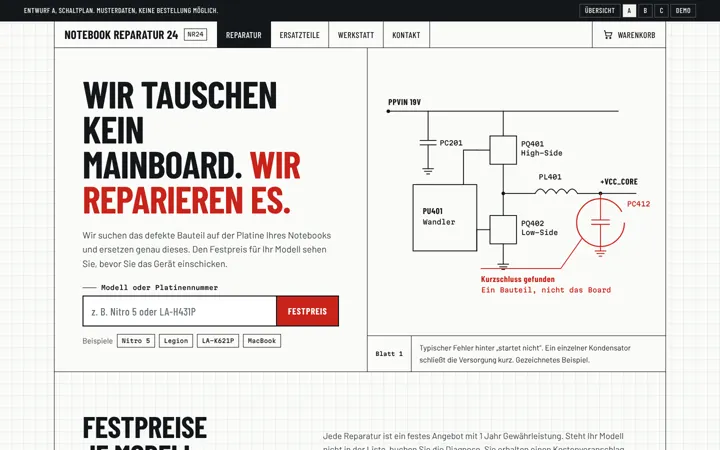
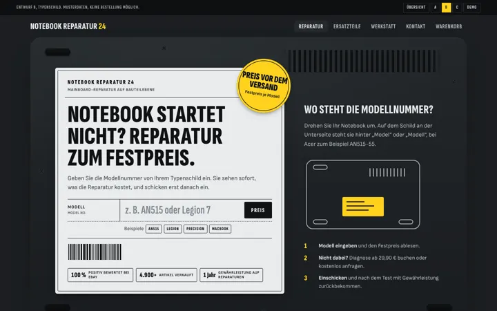
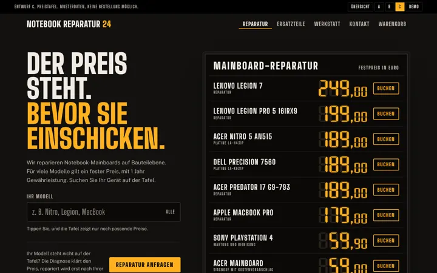

Drei Entwürfe für die Startseite
Alle drei sprechen zuerst Reparaturkunden an und zeigen den Festpreis vor dem Einschicken. Suche, Filter und Links zu Produkten funktionieren, die Daten sind dieselben wie in der Demo. Inhaber und Anschrift sind Musterdaten.
-

A, Schaltplan
Die Seite ist ein technisches Zeichenblatt. Ein gezeichneter Ausschnitt der Spannungsversorgung zeigt, dass ein einzelnes Bauteil getauscht wird und nicht das ganze Mainboard.
- Wirkung
- sachlich, präzise, hell
- Stärke
- erklärt die Bauteilreparatur am besten
- Risiko
- wirkt auf Laien eher technisch als einladend
-

B, Typenschild
Die Seite ist die Unterseite des Notebooks. Das Typenschild ist zugleich die Suche, denn genau dort liest der Kunde seine Modellnummer ab.
- Wirkung
- greifbar, nah am Gerät, dunkel
- Stärke
- führt am direktesten zur Modellnummer und zum Preis
- Risiko
- die dunkle Fläche wirkt nach Gaming-Technik, das passt zu Legion und Nitro, weniger zu MacBook
-

C, Preistafel
Die Seite ist eine Preistafel wie an der Tankstelle. Alle Festpreise stehen sofort sichtbar in Leuchtziffern, das Filterfeld lässt nicht passende Zeilen verlöschen.
- Wirkung
- direkt, laut, preisbetont
- Stärke
- macht den Festpreis zum Markenzeichen
- Risiko
- trägt nur, solange es genug feste Preise gibt